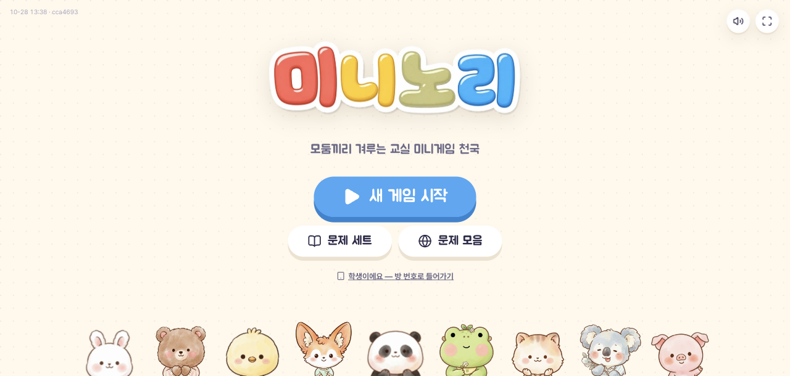
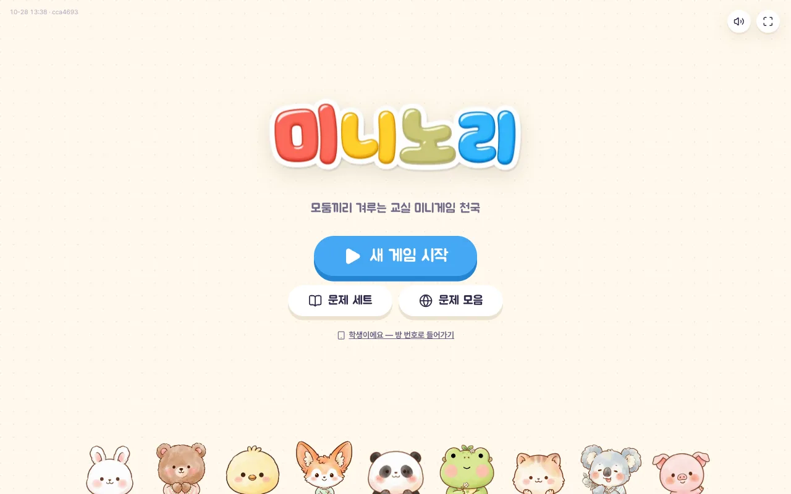
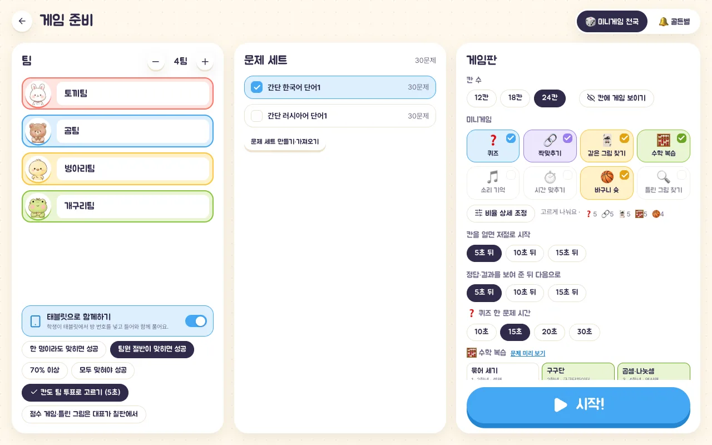
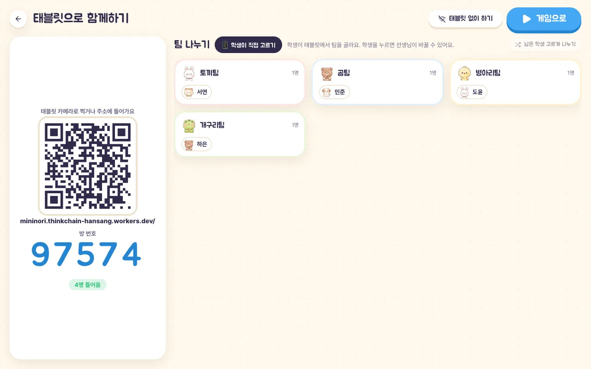
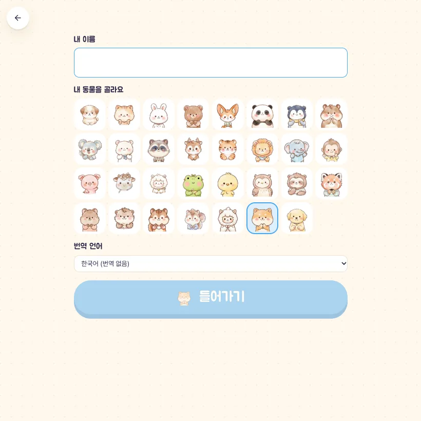
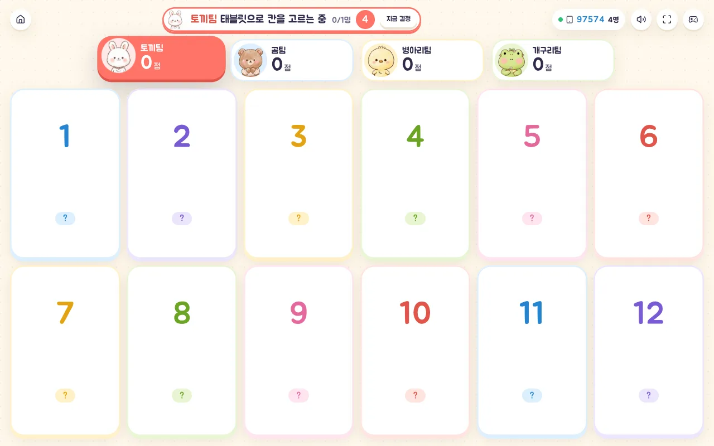
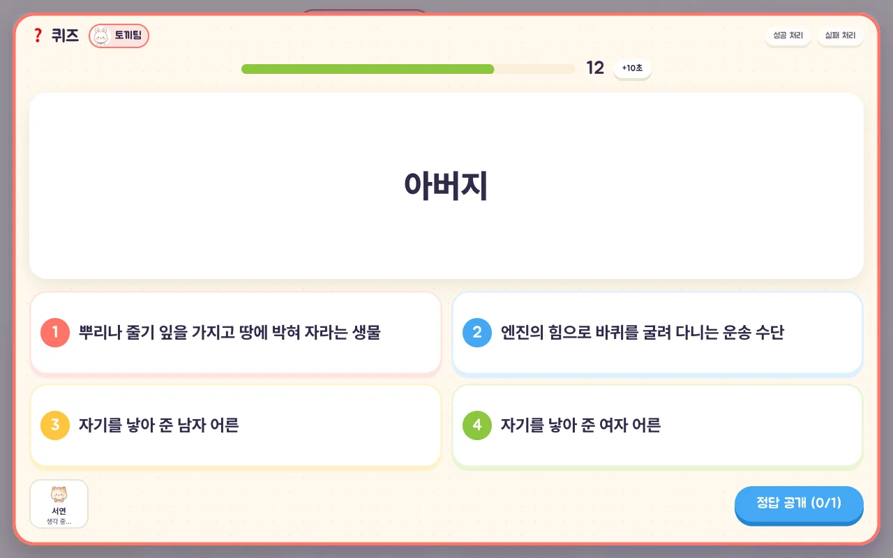
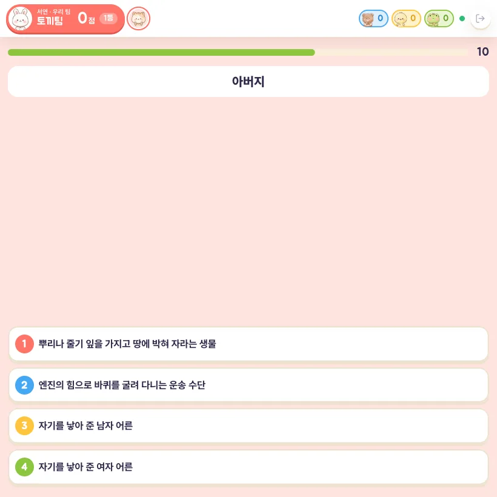
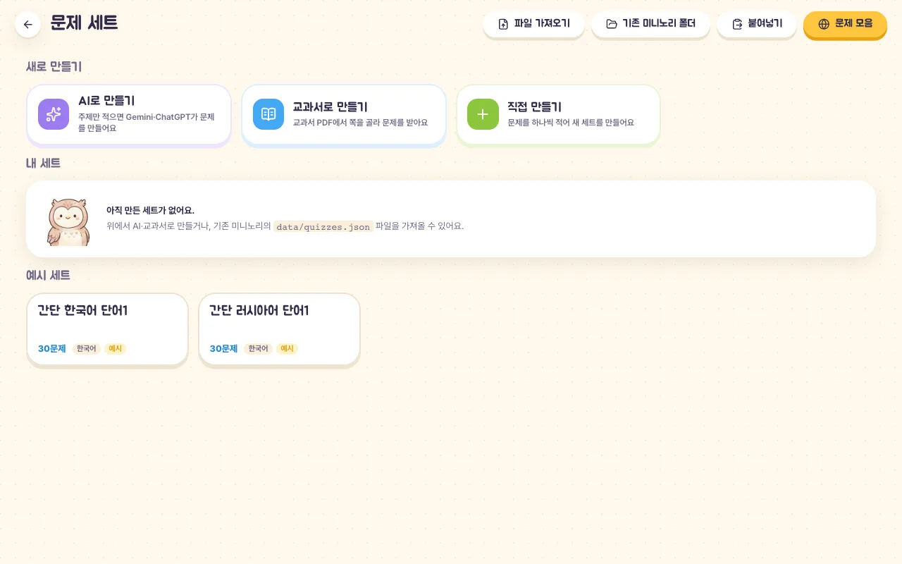
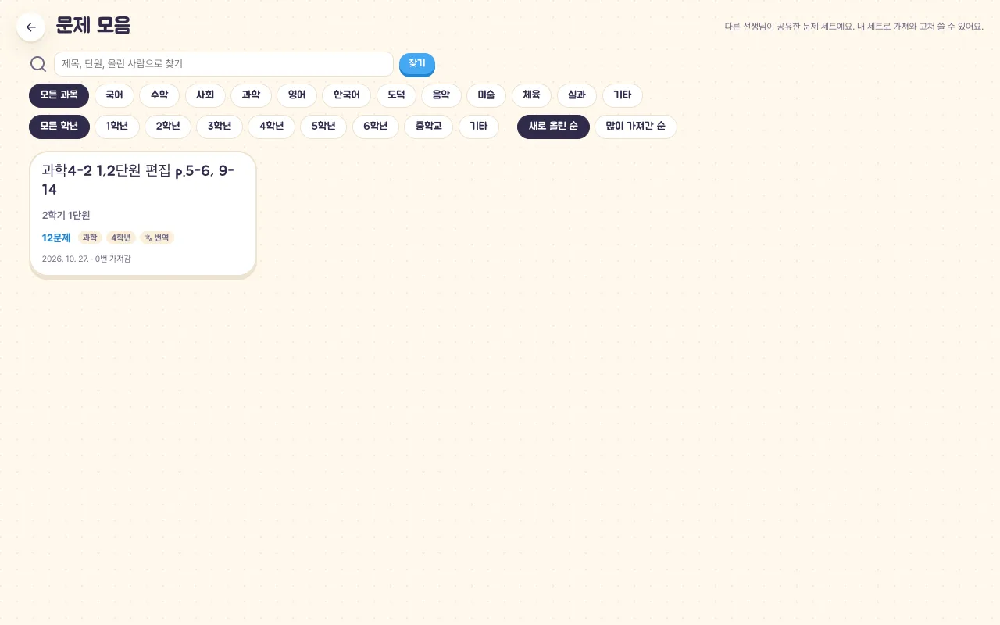

어떤 게임인가요?
전자칠판에 칸이 깔린 게임판을 띄우고, 모둠(팀)이 차례로 칸을 열어 미니게임에 도전합니다. 칸마다 퀴즈·짝맞추기·수학 복습 같은 미니게임과 숨은 보상(가질까 줄까, 폭발냥, 돌림판, 가린 카드)이 들어 있어 마지막까지 점수가 뒤집힙니다. 설치 없이 브라우저만 있으면 되고, 한 번 열어 두면 인터넷이 끊겨도 계속 쓸 수 있습니다.
- 🎲 미니게임 천국: 12·18·24칸 판에서 팀 대결을 합니다.
- 🔔 골든벨: 반 전체가 각자 태블릿으로 같은 문제를 동시에 풉니다. 빨리 맞힐수록 점수가 높고, 끝나면 시상대가 나옵니다.
- 미니게임 8가지: 퀴즈, 짝맞추기, 같은 그림 찾기, 수학 복습(9가지 주제·3단계), 소리 기억, 시간 맞추기, 바구니 슛, 틀린 그림 찾기.
사용 방법
선생님은 전자칠판(또는 교사용 노트북)에서 게임을 열고, 학생은 필요하면 태블릿으로 참여합니다. 태블릿이 없어도 칠판 하나로 진행할 수 있습니다.
1. 새 게임 시작
첫 화면에서 ‘새 게임 시작’을 누릅니다. 문제를 미리 만들거나 다른 선생님이 공유한 문제를 가져오려면 ‘문제 세트’·‘문제 모음’으로 들어갑니다. 학생 태블릿에서는 ‘학생이에요 — 방 번호로 들어가기’를 누릅니다.

2. 게임 준비
- 팀: 왼쪽에서 팀 수를 정합니다. 팀마다 동물 마스코트가 붙고 이름을 바꿀 수 있습니다.
- 문제 세트: 퀴즈·짝맞추기에 쓸 세트를 고릅니다. 여러 개를 고르면 대기실에서 학생 투표로 하나를 정합니다.
- 게임판: 칸 수와 넣을 미니게임을 고릅니다. ‘비율 상세 조정’을 켜면 게임마다 칸 수를 적게~많이로 정할 수 있습니다.
- 진행 속도: 칸을 열면 몇 초 뒤 저절로 시작할지, 정답·결과를 보여 준 뒤 몇 초 뒤 넘어갈지, 퀴즈 한 문제 시간(10~30초)을 정합니다. 선생님은 시작만 누르면 게임이 저절로 흘러갑니다.
- 태블릿으로 함께하기: 켜면 학생이 각자 태블릿으로 답합니다. 팀 성공 기준(한 명이라도 / 절반 / 70% / 모두)도 여기서 정합니다.

3. 학생 태블릿 연결 (선택)
‘태블릿으로 함께하기’를 켜고 시작하면 칠판에 QR과 방 번호가 나옵니다. 학생은 QR을 찍거나 주소에 들어가 방 번호를 넣고, 이름·동물·번역 언어를 고른 뒤 ‘들어가기’를 누릅니다. 팀은 학생이 직접 고르고, 선생님이 학생을 눌러 옮기거나 ‘남은 학생 고르게 나누기’로 한 번에 나눌 수 있습니다. 모두 들어오면 ‘게임으로’를 누릅니다.


4. 칸을 골라 미니게임 도전
위쪽에 차례인 팀과 팀별 점수가 나옵니다. 차례인 팀이 칸을 고르면(태블릿을 쓰면 5초 팀 투표) 미니게임이 시작됩니다. 퀴즈는 칠판에 문제와 보기가 뜨고, 팀원들은 각자 태블릿에서 답합니다. 맞히면 숨은 보상이 열리고, 보상 결과와 바뀐 점수가 칠판과 태블릿에 함께 보입니다.



진행 중에는 오른쪽 위의 🎮 선생님 리모컨으로 점수 고치기, 차례 바꾸기, 되돌리기, 칸 취소, 도전 건너뛰기, 시간 바꾸기, 게임 끝내기를 할 수 있습니다. 퀴즈 화면의 ‘+10초’, ‘성공 처리’·‘실패 처리’로 바로 판정할 수도 있습니다.
5. 문제 세트 만들기
- AI로 만들기: 주제·학년·과목·문제 수·난이도·번역을 고르면 프롬프트를 만들어 줍니다. ‘복사하고 Gemini 열기’로 보내고, 받은 답을 붙여 넣으면 문제를 미리 보고 세트로 저장합니다.
- 교과서로 만들기: 교과서 PDF를 열어 쪽을 고르면, 고른 쪽만 담은 작은 PDF와 프롬프트를 Gemini·ChatGPT에 넣어 문제를 받습니다. PDF는 서버로 보내지 않습니다.
- 직접 만들기: 문제를 하나씩 적고 그림·번역·해설·수식을 넣습니다. 파일 가져오기·내보내기와 기존 미니노리(Windows판) 폴더 가져오기도 됩니다.

6. 문제 모음에서 가져오기·공유하기
‘문제 모음’에서는 다른 선생님이 공유한 세트를 과목·학년으로 찾아 내 세트로 가져옵니다. 내가 만든 세트도 로그인 없이 올릴 수 있고, 올릴 때 받은 수정 열쇠로 나중에 고치거나 내릴 수 있습니다.

문제 세트와 진행 중인 게임은 그 컴퓨터의 브라우저에만 저장됩니다. 서버에는 수업 중 태블릿 방과, 선생님이 공유하기로 한 문제 세트만 올라갑니다.